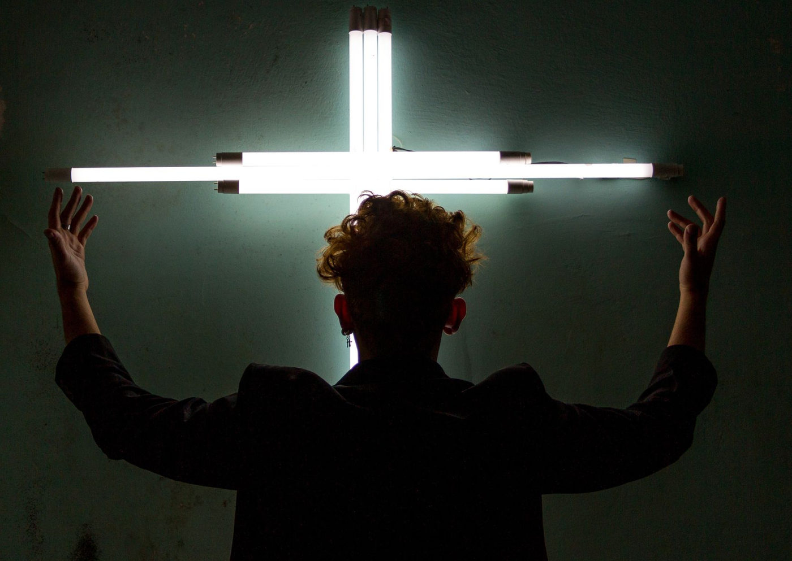

Foto — Jack Oliveira
Teatro
Impacto Agasias Grupo de Teatro volta aos palcos com nova montagem de SANTO CRISTO – Faroeste Caboclo
Inspirado na canção da Legião Urbana, espetáculo ganha encenação imersiva na Casa Cultural Alcântara Sampaio, em Heliópolis, de 10 a 26 de maio…